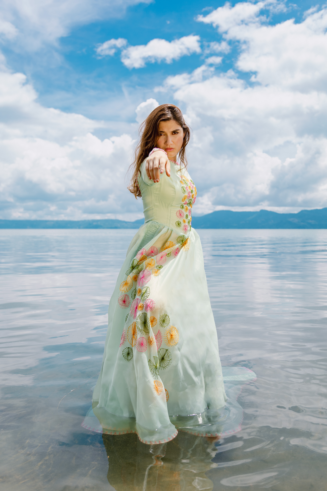
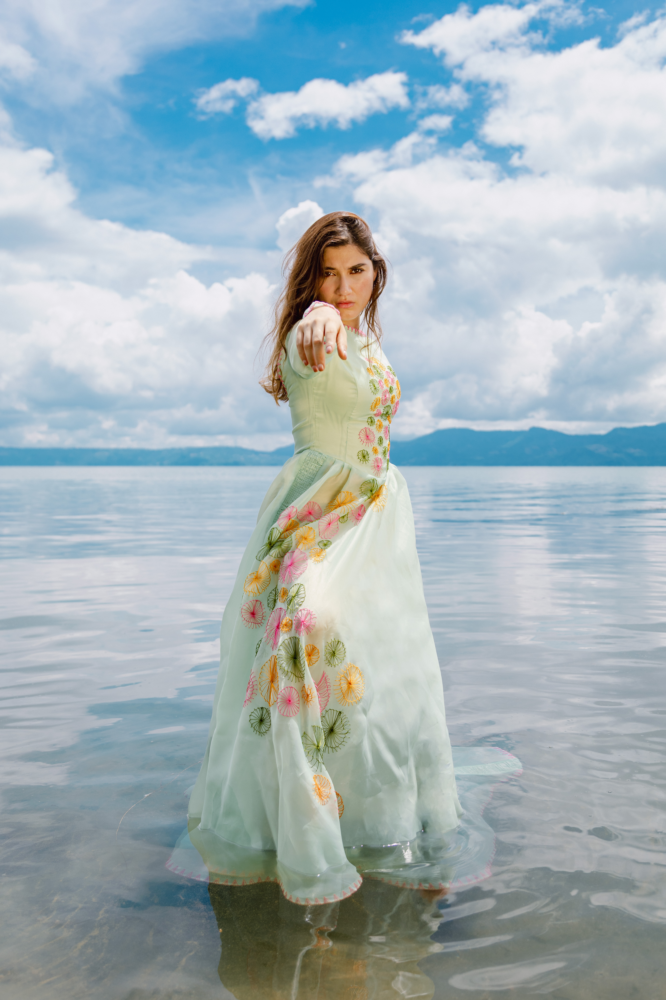

Náyade
Los nenúfares, del género Nymphaea, son plantas acuáticas con raíces
fijas, tallos sumergidos y hojas flotantes. Simbolizan la revelación
espiritual y poseen propiedades medicinales. En la mitología griega, las
ninfas o Náyades eran espíritus femeninos del agua asociados a la
fertilidad, la curación y la inspiración.
Es en donde nace la colección Náyade, en donde las mujeres sensuales que
nacen del agua se ven las figuras de las ninfas de plantas.
En las profundidades habitan las Náyade, seres inmortales de belleza
radiante y destino fatal. Su canto y su danza hechizan, otorgando vida y
muerte en un mismo suspiro. Vestidas de tonos verdes, magentas y
blancos, sus cuerpos son tejidos divinos adornados con flores que
seducen y engañan. En sus ojos misteriosos guardan las historias de
quienes cayeron rendidos ante su amor eterno.

 
